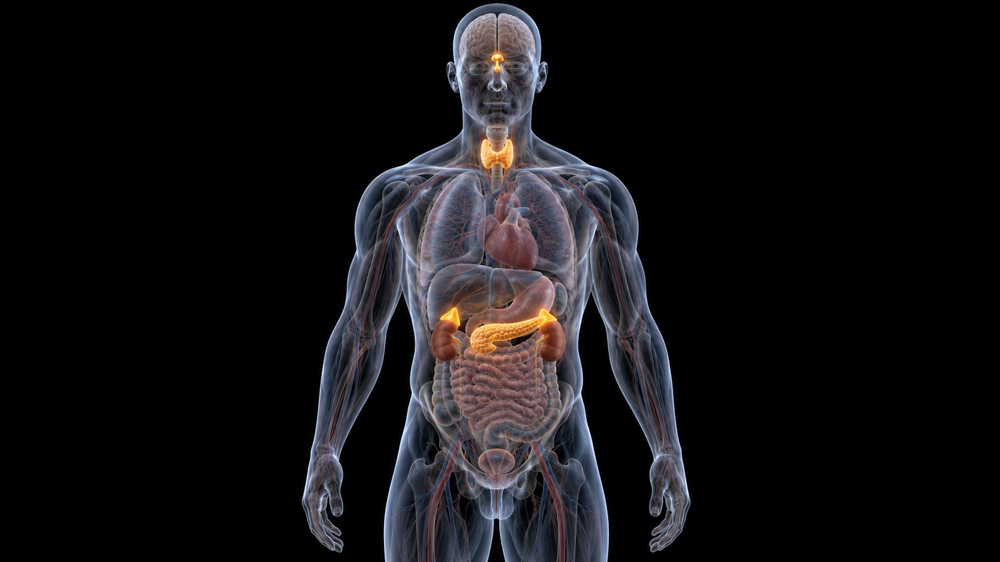
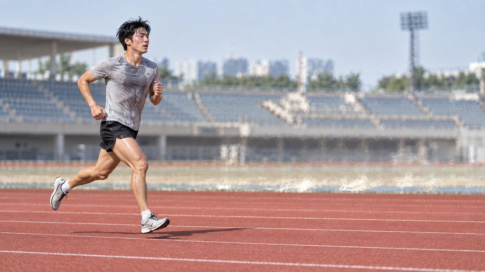

| 분비선 | 호르몬 | 운동 중 |
|---|---|---|
| 뇌하수체 전엽 | 성장호르몬 | ↑ |
| 뇌하수체 후엽 | 항이뇨호르몬(ADH) | ↑ |
| 부신수질 | 에피·노르에피네프린 | ↑↑ |
| 부신피질 | 코티솔 · 알도스테론 | ↑ |
| 췌장 | 인슐린 / 글루카곤 | ↓ / ↑ |
글루카곤·에피네프린 → 간이 포도당을 혈액으로 — 고강도에서 중요
젖산·글리세롤·아미노산으로 새 포도당 — 코티솔·글루카곤, 오래 할수록 중요
카테콜아민·성장호르몬 → 유리지방산을 연료로
인슐린이 줄어도 근수축 자체가 GLUT4를 세포막으로 옮겨 당을 들인다
근수축이 GLUT4를 세포막으로 옮긴다. 인슐린이 줄어야 간의 포도당 방출과 지방 분해가 잘 된다.
같은 혈당을 처리하는 데 인슐린이 덜 필요하다 — GLUT4 증가
| 항목 | 성별 | 나이 | 체질량 지수 | 안정 시 심박수 |
|---|---|---|---|---|
| A 학생 | 남 | 15세 | 31.0 kg/m² | 75 bpm |
| 항목 | 운동 프로그램 내용 |
|---|---|
| 운동 형태 | 전신 심폐 지구력 운동 |
| 〰〰〰〰〰〰〰〰〰〰〰〰〰〰〰〰〰〰 | |
| 운동 강도 | 최대 운동 강도의 ( ⓐ )% 목표 심박수 140 bpm |

같은 절대 강도가 상대적으로 쉬워져 에피·노르에피네프린 반응↓
글루카곤 상승 폭↓ · 인슐린 감소 폭↓ — 혈당이 덜 흔들린다
인슐린 민감도↑ · GLUT4↑ · 지방 이용↑(글리코겐 절약)
부신수질: 에피·노르에피
부신피질: 코티솔·알도스테론
뇌하수체 후엽: ADH
카테콜아민·글루카곤·코티솔·GH ↑
목적: 혈당 유지 + 지방 동원
간 글리코겐 분해 · 포도당 신생
지방 분해로 절약
근수축 GLUT4
삼투압↑ → ADH → 물 재흡수
레닌 → 안지오텐신 → 알도스테론 → Na⁺
같은 강도 카테콜아민↓
인슐린 민감도↑ · GLUT4↑
부신수질 호르몬 · 인슐린 방향
ADH·부신피질 · 카보넨+호르몬 그래프
관련: 2020 B10 · 2025 A11
| → Space 화면 클릭 | 다음 (단계 → 다음 장) |
| ← 오른쪽 클릭 | 이전 |
| R | 이 장 애니메이션 다시 보기 |
| T N | 대본 보기 |
| O | 전체 보기 |
| F | 전체 화면 |
| B / W | 검은 화면 / 흰 화면 |
| 숫자 + Enter | 그 장으로 이동 |
| 좌우로 밀기 | 전자칠판·폰에서 넘기기 |